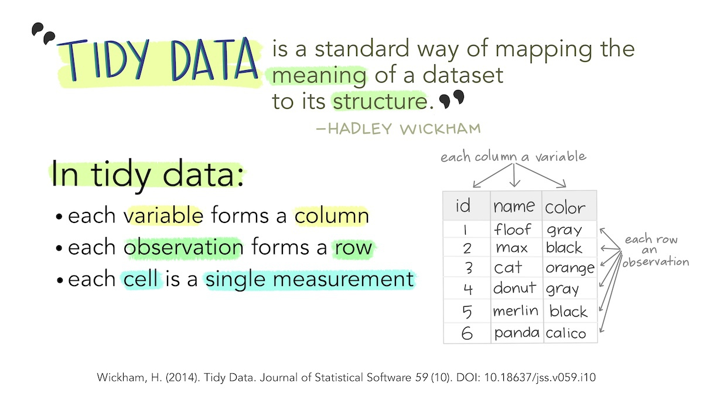
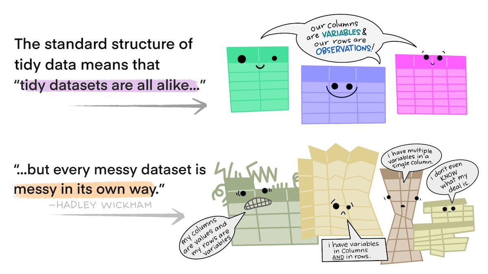
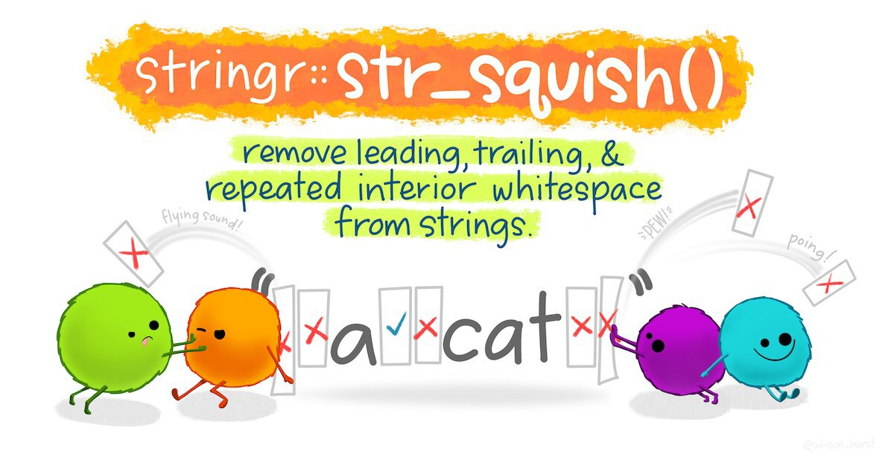
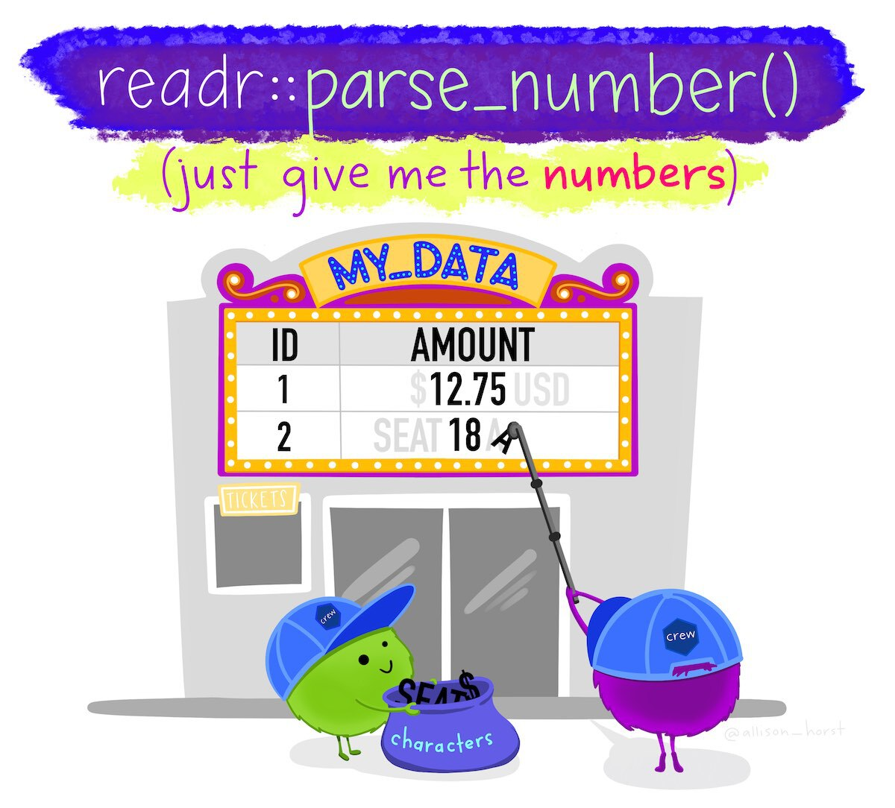
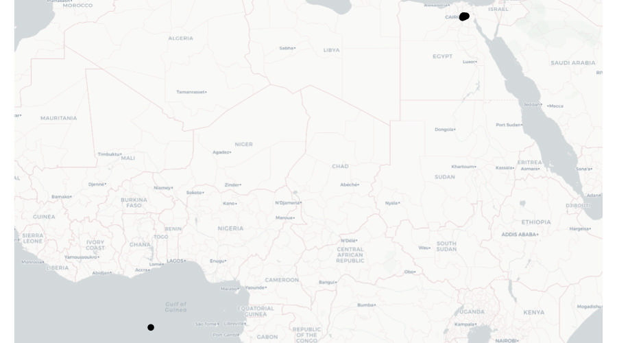

| area | assault | robbery | burglary |
|---|---|---|---|
| Northville | 4 | 2 | 10 |
| Middletown | 6 | 5 | 20 |
| Southam | 10 | 0 | 10 |
12 Handling messy data
Data is at the core of crime mapping, but it is not always provided in a clean and structured format. This chapter introduces the challenges of working with messy data and provides practical techniques to tidy and prepare datasets for analysis in R. Topics covered include restructuring data, dealing with missing values, separating and merging variables, and resolving inconsistencies. By learning these skills, you will be able to transform raw crime data into a format suitable for mapping and other analysis.
Before you start
Open RStudio or – if you already have RStudio open – click Session then Restart R. Make sure you’re working inside the Crime Mapping RStudio project you created in Section 1.4.2, then you’re ready to start mapping.
12.1 Introduction
Data is the foundation of everything we do in crime mapping. To make a crime map needs data on the locations and types of crimes; data on roads, buildings and natural features to make up a base map, and data on other features (such as particular types of facility) that might be relevant to why crime happens in particular place.

Until now, all the data we have used has been tidy data. Data is tidy if it comes in a particular format where every variable (e.g. the date on which a crime occurred) is stored in a separate column and data for every observation (e.g. all the data about a particular crime, a particular offender etc.) is stored in a separate row. For typical crime data, that means each crime is represented by one row in the data and each thing that we know about that crime is stored in a separate column.
Unfortunately, not all the data we might like to use in crime mapping is available in a tidy format. The people, organisations and systems and produce data store it in many formats, which are often not tidy and not easy to analyse. Messy data is more difficult to work with because every messy dataset has a unique structure, which we have to remember every time we want to work with it.
Tidy data, on the other hand, is easier to work with because its format is familiar and consistent. Many R functions are also designed to work with tidy data, so tidying our datasets often makes analysis quicker, too.
The first step to analysing messy data is therefore to wrangle it into a tidy format. We have already seen this principle at work when we use the clean_names() function from the janitor package to convert column names into a consistent format so that we don’t have to keep remembering which unique format the column names are in.
In this chapter we will learn how to tidy messy data to make it easier to work with. To do that, we will create a series of ‘toy’ datasets we can work with. To do this we will use the tibble() and tribble() functions from the tibble package, which is part of the tidyverse.
Tidy data
Why is tidy data preferred for analysis in R?
What is a characteristic of tidy data?
Why might a dataset be messy when obtained from an external source?
12.2 Tidying the structure of data

Every messy dataset is messy in its own unique way, but often messiness comes from the structure of data not being tidy. Tabular data can come in two general formats: long and wide. For example, imagine a dataset showing counts of several different types of crime in several different areas. We could store this data in wide format, where there is a column for the name of the area and then a column for each type of crime.
Wide-format data are often useful for presentation – you might often see a table like this in a report or article. But wide data are less useful for analysis because one of the variables – ‘type of crime’ – is being stored not as a variable but in the various column names. One sign that your data has this problem is if several of the columns form a group of columns, separate from the others. In this case, there is a group of columns that show crime counts that is different from the other column that shows the area name.
Fortunately, we can easily convert this data (which is stored in the object crime_counts) into long format using the pivot_longer() function from the tidyr package. To use pivot_longer(), we have to specify in the cols argument which columns we want to ‘gather’ together into one column to store the category names and one column to store the values. We can specify the columns we want to gather as a vector, i.e. c(assault, burglary, robbery).
R Console
# Load packages
pacman::p_load(janitor, readxl, sf, tidyverse)
# Create a dataset of crime counts in 'wide' format
crime_counts <- tribble(
~area, ~assault, ~robbery, ~burglary,
"Northville", 4, 2, 10,
"Middletown", 6, 5, 20,
"Southam", 10, 0, 10
)
# Convert the dataset to 'long' format
pivot_longer(crime_counts, cols = c(assault, burglary, robbery))# A tibble: 9 × 3
area name value
<chr> <chr> <dbl>
1 Northville assault 4
2 Northville burglary 10
3 Northville robbery 2
4 Middletown assault 6
5 Middletown burglary 20
6 Middletown robbery 5
7 Southam assault 10
8 Southam burglary 10
9 Southam robbery 0By default, pivot_longer() calls the new column of category names name and the new column of values value. We can specify more-descriptive names using the names_to and values_to arguments.
R Console
# A tibble: 9 × 3
area type count
<chr> <chr> <dbl>
1 Northville assault 4
2 Northville burglary 10
3 Northville robbery 2
4 Middletown assault 6
5 Middletown burglary 20
6 Middletown robbery 5
7 Southam assault 10
8 Southam burglary 10
9 Southam robbery 0It is better to have the names of different categories stored as a single variable rather than as the names of several variables because they are easier to work with that way. For example, if the data are in long format you could sort the categories alphabetically using arrange(crime_counts, type), or you could transform the names to title case using mutate(crime_counts, type = str_to_title(type)). Both these operations would be harder to do if the data were in wide format.
A common reason for data to be stored in wide format is where repeated observations are made of some value over time. For example, we might have monthly counts of crimes for different areas.
| area | jan_2020 | feb_2020 | mar_2020 | apr_2020 | may_2020 |
|---|---|---|---|---|---|
| Northville | 13 | 10 | 12 | 9 | 10 |
| Middletown | 21 | 19 | 22 | 19 | 20 |
| Southam | 15 | 13 | 16 | 15 | 14 |
Storing data in this way is particularly awkward because variable names can only contain text, so R does not know that the column names represent dates. This means, for example, that we could not filter the dataset to only include data from after a certain date.
When we want to gather a large number of columns together, it can get tedious to type all the column names for the cols argument to pivot_longer(). Instead, since we want to gather all the columns except one, we can just specify that we should not gather the area column, which implicitly tells pivot_longer() to gather all the other columns. We tell pivot_longer() not to gather the area column by specifying cols = -area (note the minus sign in front of the column name).
R Console
# Create a dataset of monthly crime counts in wide format
monthly_counts <- tribble(
~area, ~jan_2020, ~feb_2020, ~mar_2020, ~apr_2020, ~may_2020,
"Northville", 13, 10, 12, 9, 10,
"Middletown", 21, 19, 22, 19, 20,
"Southam", 15, 13, 16, 15, 14
)
# Convert dataset to 'long' format with custom column names
pivot_longer(
monthly_counts,
cols = -area,
names_to = "month",
values_to = "count"
)# A tibble: 15 × 3
area month count
<chr> <chr> <dbl>
1 Northville jan_2020 13
2 Northville feb_2020 10
3 Northville mar_2020 12
4 Northville apr_2020 9
5 Northville may_2020 10
6 Middletown jan_2020 21
7 Middletown feb_2020 19
8 Middletown mar_2020 22
9 Middletown apr_2020 19
10 Middletown may_2020 20
11 Southam jan_2020 15
12 Southam feb_2020 13
13 Southam mar_2020 16
14 Southam apr_2020 15
15 Southam may_2020 14There is still a problem with this data, which is that the month variable contains not date values but instead the month and year stored as text. We will learn how to deal with that issue in Chapter 16.
12.2.1 Skipping unwanted rows in imported data
Data released by government organisations are often designed to be viewed by humans rather than processed by statistical software. We can see this in this screen shot of a dataset produced by the UK Office for National Statistics on cybercrime in the UK based on responses to the Crime Survey for England and Wales.

Looking at the row numbers on the left-hand side, we can see that the that the first row is taken up not with the column names (as in a tidy dataset) but with the title of the dataset. The next row is blank, and the third row then contains some metadata to say that the data relates to England and Wales and to adults aged 16 and over. Only on row four do we see the column names. There are also blank rows within the data that are used to separate out different categories of data.
If we try to import this data using, for example, the read_excel() function from the readxl package, we will find various problems.
R Console
# Since `.xlsx` files are binary files, we need to add `mode = "wb"` on Windows.
# On other platforms it makes no difference, but adding `mode = "wb" does not
# cause any problems.
download.file(
url = "https://www.ons.gov.uk/file?uri=/peoplepopulationandcommunity/crimeandjustice/datasets/crimeinenglandandwalesexperimentaltables/yearendingdecember2018/additionalfraudandcybercrimetablesyearendingdecember2018correction.xlsx",
destfile = str_glue("{tempdir()}/cybercrime.xlsx"),
mode = "wb"
)
read_excel(str_glue("{tempdir()}/cybercrime.xlsx"), sheet = "Table E1")New names:
• `` -> `...2`
• `` -> `...3`
• `` -> `...4`
• `` -> `...5`# A tibble: 46 × 5
Table E1: Fraud and computer misuse by loss (of mo…¹ ...2 ...3 ...4 ...5
<chr> <chr> <chr> <chr> <chr>
1 <NA> <NA> <NA> <NA> <NA>
2 England and Wales <NA> <NA> <NA> Adul…
3 Offence group3 Numb… Rate… Numb… Perc…
4 <NA> <NA> <NA> <NA> <NA>
5 FRAUD5 3648 78.0… 3078 6.58…
6 <NA> <NA> <NA> <NA> <NA>
7 With loss, no or only partial reimbursement 660 14.1… 613 1.31…
8 With loss, fully reimbursed 2066 44.2… 1765 3.77…
9 Without loss 922 19.7… 804 1.72…
10 <NA> <NA> <NA> <NA> <NA>
# ℹ 36 more rows
# ℹ abbreviated name:
# ¹`Table E1: Fraud and computer misuse by loss (of money or property) - number and rate of incidents and number and percentage of victims, year ending December 2018 CSEW1,2`It’s clear that this dataset has not loaded in the way that we want, because the first row doesn’t contain the column names. Fortunately, we can deal with this problem using the skip argument to the read_excel() function. This allows us to specify a number of rows to ignore at the start of the dataset. In this case, we want to ignore the first three rows of the data (the table title, a blank line and the the metadata line), so we can specify skip = 3. The same skip argument also exists in the read_csv() function for reading CSV data and the read_tsv() function for reading tab-separated data.
# A tibble: 43 × 5
`Offence group3` Number of incidents …¹ Rate per 1,000 adult…²
<chr> <dbl> <dbl>
1 <NA> NA NA
2 FRAUD5 3648 78.0
3 <NA> NA NA
4 With loss, no or only partial … 660 14.1
5 With loss, fully reimbursed 2066 44.2
6 Without loss 922 19.7
7 <NA> NA NA
8 Bank and credit account fraud 2433 52.0
9 With loss, no or only partial … 235 5.03
10 With loss, fully reimbursed 1727 36.9
# ℹ 33 more rows
# ℹ abbreviated names: ¹`Number of incidents (thousands)`,
# ²`Rate per 1,000 adults`
# ℹ 2 more variables: `Number of victims (thousands)4` <dbl>,
# `Percentage victims once or more4` <dbl>This has dealt with the problem caused by the extra rows at the top of the data. But if we look at the bottom of the dataset, we will see that there are also several rows of footnotes. These footnotes are important for us to have read so that we understand the data, but they aren’t part of the data itself.

We can remove these extra rows at the end of our data using the slice() function from the dplyr package. slice() allows us to choose certain rows from our data by row number. Looking at the screen shot above, our data finishes on row 34 (row 36 looks like part of our data but the value there actually shows the number of people involved in the survey, not a number of incidents). But:
- we have already removed the first three rows using the
skipargument toread_excel(), and - row four of the original spreadsheet has become our column names,
so row 34 on the spreadsheet is actually row 30 in our loaded dataset. Knowing this, we can remove all the rows below row 30 using the slice() function from the dplyr package:
# A tibble: 30 × 5
`Offence group3` Number of incidents …¹ Rate per 1,000 adult…²
<chr> <dbl> <dbl>
1 <NA> NA NA
2 FRAUD5 3648 78.0
3 <NA> NA NA
4 With loss, no or only partial … 660 14.1
5 With loss, fully reimbursed 2066 44.2
6 Without loss 922 19.7
7 <NA> NA NA
8 Bank and credit account fraud 2433 52.0
9 With loss, no or only partial … 235 5.03
10 With loss, fully reimbursed 1727 36.9
# ℹ 20 more rows
# ℹ abbreviated names: ¹`Number of incidents (thousands)`,
# ²`Rate per 1,000 adults`
# ℹ 2 more variables: `Number of victims (thousands)4` <dbl>,
# `Percentage victims once or more4` <dbl>The final problem with the structure of this dataset is the blank rows that are used to separate different crime categories in the original table. We can deal with this using the remove_empty() function from the janitor package, which removes all rows and/or columns that contain only NA values. We will also clean the column names at the same time and then rename the columns to be shorter, which will make it easier to refer to them in our code.
R Console
str_glue("{tempdir()}/cybercrime.xlsx") |>
read_excel(sheet = "Table E1", skip = 3) |>
slice(1:30) |>
remove_empty(which = "rows") |>
clean_names() |>
rename(
offence = offence_group3,
crimes = number_of_incidents_thousands,
incidence = rate_per_1_000_adults,
victims = number_of_victims_thousands_4,
prevalence = percentage_victims_once_or_more4
)# A tibble: 22 × 5
offence crimes incidence victims prevalence
<chr> <dbl> <dbl> <dbl> <dbl>
1 FRAUD5 3648 78.0 3078 6.58
2 With loss, no or only partial reimbursem… 660 14.1 613 1.31
3 With loss, fully reimbursed 2066 44.2 1765 3.78
4 Without loss 922 19.7 804 1.72
5 Bank and credit account fraud 2433 52.0 2056 4.40
6 With loss, no or only partial reimbursem… 235 5.03 211 0.451
7 With loss, fully reimbursed 1727 36.9 1458 3.12
8 Without loss 470 10.1 419 0.896
9 Consumer and retail fraud6 1031 22.1 954 2.04
10 With loss, no or only partial reimbursem… 380 8.13 361 0.771
# ℹ 12 more rowsThis dataset now has a tidy structure: each row represents an observation (in this case, data about a particular type of crime), each column represents a piece of information about the observation and each cell represents a single value. We still need to clean up the footnote numbers that appear in some of the values, but we will deal with that later in this chapter.
12.2.2 Separating multiple variables stored in a single column
Sometimes datasets include multiple variables in a single column. For example, data about crime victims stored in an object called victims might include a single column representing both age and sex.
| first_name | last_name | age_sex |
|---|---|---|
| Lyda | Gartrell | 40/F |
| Kareem | David | 26 |
| Lisa | Dean | 21/F |
| Melina | Shehan | 25/F |
| Alfredo | Matamoros | 18/M |
It would be easier to wrangle this data (e.g. to filter by age) if the data in the age_sex column was stored in two separate columns. Making this change would also make sure our data meets the definition of being tidy: every variable should be stored in a separate column.
We can split the age_sex column into two using the separate() function from the tidyr package. We specify the existing column we want to split using the col argument, the names of the new columns we want to create using the into argument and the character(s) that represent the boundary between the two pieces of data in each column (in this case, /).
R Console
# Create an example dataset of fictional crime victims
victims <- tribble(
~first_name, ~last_name, ~age_sex,
"Lyda", "Gartrell", "40/F",
"Kareem", "David", "26",
"Lisa", "Dean", "21/F",
"Melina", "Shehan", "25/F",
"Alfredo", "Matamoros", "18/M"
)
# Separate `age_sex` column into separate columns for age and sex
separate(victims, col = age_sex, into = c("age", "sex"), sep = "/")Warning: Expected 2 pieces. Missing pieces filled with `NA` in 1 rows [2].# A tibble: 5 × 4
first_name last_name age sex
<chr> <chr> <chr> <chr>
1 Lyda Gartrell 40 F
2 Kareem David 26 <NA>
3 Lisa Dean 21 F
4 Melina Shehan 25 F
5 Alfredo Matamoros 18 M You might have noticed that this function produced a warning message saying Expected 2 pieces. Missing pieces filled with NA in 1 rows [2]. This is because the second row of data in the victims object only contains one of the two pieces of data. When this happens, separate() fills in the values that are present from the left, filling any remaining columns to the right with NA. If this is what we want (as it is here), we can silence this warning by specifying fill = "right". If instead we wanted separate() to fill in columns with NA values from the left, we could specify fill = "left".
Another issue with the separated data is that because the column age_sex was a character column, both age and sex are character columns, too. Since age is actually numeric, we can get separate() to convert this new column to the correct type automatically by specifying convert = TRUE.
R Console
# A tibble: 5 × 4
first_name last_name age sex
<chr> <chr> <int> <chr>
1 Lyda Gartrell 40 F
2 Kareem David 26 <NA>
3 Lisa Dean 21 F
4 Melina Shehan 25 F
5 Alfredo Matamoros 18 M We now know how to convert a data into a tidy format using pivot_longer() to convert data to long format, remove non-data rows using slice(), remove_empty() and the skip argument to many functions like read_csv(), and split columns with separate(). In the next section, we’ll learn how to tidy the content of individual cells.
Tidying the structure of data
What issue might arise when working with wide-format data?
Which of the following best describes a tidy dataset?
Which function is used to convert wide data to long format in R?
12.3 Tidying the content of cells
As well as data with a messy structure, you might be provided with data with messy content inside some of the cells. In this section we will clean messy content, mostly using functions from the stringr package that is loaded automatically when we load tidyverse. All the functions in the stringr package start with str_ so that they are easy to remember.
We can change the case of text using one of four str_to_ functions:
| input | function | output |
|---|---|---|
| A stRinG oF TeXT | `str_to_lower()` | a string of text |
| A stRinG oF TeXT | `str_to_upper()` | A STRING OF TEXT |
| A stRinG oF TeXT | `str_to_sentence()` | A string of text |
| A stRinG oF TeXT | `str_to_title()` | A String Of Text |
We can also remove unwanted text from within values. For example, if there is unwanted white-space (spaces, tabs, etc.) at the beginning or end of a string of characters, we can remove it with str_trim(). str_squish() does the same thing, but also reduces any repeated white-space characters in a string of text down to a single space. For example, str_squish(" A string of text") produces the result A string of text.

Data from the UK police open data website includes the words ‘on or near’ at the start of every value in the location column of the data. This is to remind users that the locations of crimes are deliberately obscured by being ‘snapped’ to the centre of the street on which they occur to protect victims’ privacy.
| month | longitude | latitude | location | lsoa_name |
|---|---|---|---|---|
| 2020-01 | -1.120 | 53.3 | On or near Supermarket | Bassetlaw 013C |
| 2020-02 | -0.993 | 53.2 | On or near Turner Lane | Newark and Sherwood 001A |
| 2020-05 | -1.250 | 53.1 | On or near Brookdale Road | Ashfield 004C |
| 2020-08 | -1.160 | 53.0 | On or near Raithby Close | Nottingham 006B |
| 2020-10 | -1.180 | 53.0 | On or near Bowden Avenue | Ashfield 013A |
| 2020-10 | -1.180 | 53.0 | On or near Langley Close | Ashfield 013A |
We don’t need this constant value for analysis, and for large datasets it can unnecessarily increase the size of the data when we save it to a file. For this reason we might want to remove this constant value using the str_remove() function.
R Console
# Create example dataset similar to UK police open data
uk_data <- tribble(
~month, ~longitude, ~latitude, ~location, ~lsoa_name,
"2020-01", -1.12, 53.3, "On or near Supermarket", "Bassetlaw 013C",
"2020-02", -0.993, 53.2, "On or near Turner Lane", "Newark and Sherwood 001A",
"2020-05", -1.25, 53.1, "On or near Brookdale Road", "Ashfield 004C",
"2020-08", -1.16, 53.0, "On or near Raithby Close", "Nottingham 006B",
"2020-10", -1.18, 53.0, "On or near Bowden Avenue", "Ashfield 013A",
"2020-10", -1.18, 53.0, "On or near Langley Close", "Ashfield 013A"
)
# Remove constant text from the location column
mutate(uk_data, location = str_remove(location, "On or near "))# A tibble: 6 × 5
month longitude latitude location lsoa_name
<chr> <dbl> <dbl> <chr> <chr>
1 2020-01 -1.12 53.3 Supermarket Bassetlaw 013C
2 2020-02 -0.993 53.2 Turner Lane Newark and Sherwood 001A
3 2020-05 -1.25 53.1 Brookdale Road Ashfield 004C
4 2020-08 -1.16 53 Raithby Close Nottingham 006B
5 2020-10 -1.18 53 Bowden Avenue Ashfield 013A
6 2020-10 -1.18 53 Langley Close Ashfield 013A The lsoa_name code of this dataset includes the name of the small statistical area in which each crime occurred. Each name is made up of the name of the local government district covering the area followed by a unique code. If we wanted to extract just the district name (for example so we could count the number of crimes in each district) we can do that by removing the code that follows the district name. To do this we need to use a regular expression, which is a way of describing a pattern in a string of characters. Regular expressions can be used to find, extract or remove characters that match a specified pattern.
Regular expressions can be complicated, so we will only scratch the surface of what’s possible here. You can find out much more about about them in the article on regular expressions included in the stringr package. The coded description of the pattern of characters we need to match the code at the end of the lsoa_name column is \\s\\w{4}$. This is made up three parts:
\\smeans match exactly one white-space character (e.g. a space or a tab),\\w{4}means match exactly four word characters (i.e. any letter, any number or some punctuation marks), and$means match the end of the string.
So \\s\\w{4}$ means match exactly one white-space character followed by exactly four word characters at the end of the string. We can use this pattern as the second argument to the str_remove() function to remove the characters matched by the pattern.
R Console
# A tibble: 6 × 2
lsoa_name district
<chr> <chr>
1 Bassetlaw 013C Bassetlaw
2 Newark and Sherwood 001A Newark and Sherwood
3 Ashfield 004C Ashfield
4 Nottingham 006B Nottingham
5 Ashfield 013A Ashfield
6 Ashfield 013A Ashfield Instead of using a regular expression to remove characters, we could instead use regular expressions together with str_extract() to keep only the characters matched by the pattern, str_replace() to replace the first group of characters matched by the pattern and str_replace_all() to replace all the groups of characters matched by the pattern. For more tips on using regular expressions together with functions from the stringr package, see the stringr package cheat sheet or visit regexr.com.
12.3.1 Converting between types of variable
Sometimes columns in your data will be stored as the wrong type of variable. read_csv() and other functions from the readr package try to guess what type of variable is contained in each column based on what is contained in the first few rows, but this does not always work. For example, a variable containing numbers might be stored as characters, meaning functions like mean() will not work.
R Console
Warning in mean.default(numbers_as_text): argument is not numeric or logical:
returning NA[1] NAIn cases like this, we can use the parse_number() function from the readr package (part of tidyverse) to convert the character variable into a numeric variable.
[1] 12.33333
We can use other functions in the parse_*() family to convert character values to other data types. For example, we can use parse_logical() to convert true/false values stored as text to TRUE and FALSE values. Be careful, though: if you try to convert a variable to a data type that makes no sense, you are likely to find all of your values replaced with NA.
Sometimes numbers will be stored alongside other values, such as when currency values are stored together with a currency symbol. We can also deal with values like these by using parse_number(), which strips all the non-numeric characters from a value and then converts the numeric characters to a number. For example, parse_number("Room 14A") produces the numeric value 14.
If there are multiple columns in a dataset that store non-text data as character values, we can also use the type_convert() function from the readr package to automatically convert them all.
12.3.2 Recoding categorical variables
Crime data often includes categorical variables, such as crime types or location categories. It can be useful to change these categories, for example so that we can join two datasets or abbreviate category names for use in the axis labels of a chart.
We can use the if_else() function from the dplyr package to change particular values, but this only allows us to change a single value and can produce slightly untidy code. Instead we can use the case_match() function from the dplyr package to change one or more values at the same time. For example, if we wanted to change the value Supermarket to Shop in the UK police data.
R Console
# A tibble: 6 × 5
month longitude latitude location lsoa_name
<chr> <dbl> <dbl> <chr> <chr>
1 2020-01 -1.12 53.3 Shop Bassetlaw 013C
2 2020-02 -0.993 53.2 Turner Lane Newark and Sherwood 001A
3 2020-05 -1.25 53.1 Brookdale Road Ashfield 004C
4 2020-08 -1.16 53 Raithby Close Nottingham 006B
5 2020-10 -1.18 53 Bowden Avenue Ashfield 013A
6 2020-10 -1.18 53 Langley Close Ashfield 013A The first argument to case_match() is the name of the variable to be recoded. That is followed by one or more arguments showing which values should be changed, and what they should be changed to. The old and new values are separated by a tilde (~) character, with the old value on the left. The final argument (.default) specifies what value the variable should have if it does not currently have any of the values specified in the pairs of values already provided. In this case, we use .default = location to specify that unmatched values should keep their existing values.
We can use case_match() to make more-complicated changes. For example we can change multiple values at the same time, including merging different values into the same new value:
R Console
# A tibble: 6 × 5
month longitude latitude location lsoa_name
<chr> <dbl> <dbl> <chr> <chr>
1 2020-01 -1.12 53.3 Shop Bassetlaw 013C
2 2020-02 -0.993 53.2 Turner Lane Newark and Sherwood 001A
3 2020-05 -1.25 53.1 Brookdale Road Ashfield 004C
4 2020-08 -1.16 53 Raithby Close Nottingham 006B
5 2020-10 -1.18 53 Bestwood Village Ashfield 013A
6 2020-10 -1.18 53 Bestwood Village Ashfield 013A 12.3.3 Missing values
We have already encountered the NA value, which R uses to represent a value that is missing from a dataset. While R uses NA to represent missing values, some data providers use other codes. For example, a data provider might use a dash (-) or two periods (..) to represent missing values. Fortunately, we can convert any value to NA so that we know that it represents a missing value.
Imagine that you have been provided with a dataset of burglaries that includes an estimate of the value of the goods that were stolen in British pounds. You have been told that when the value of the stolen goods wasn’t known, this is recorded as the value -1 in the data. If we use mean() to estimate the average value of property stolen, the value -1 will give us an incorrect result.
R Console
# Create a dataset of burglary dates/times with the value of goods stolen
burglary_values <- tibble(
crime_number = runif(n = 5, min = 100000, max = 999999),
value = c(1320, 653, 2068, -1, 580)
)
# Try to calculate the mean value -- no error, but the answer is wrong
# `pull()` is used to extract the `value` column from `burglary_values`
mean(pull(burglary_values, "value"))[1] 924If we instead convert the value -1 to NA first, mean() will know to ignore that value as long as we specify the argument na.rm = TRUE.
R Console
[1] 1155.25Excluding the value -1 makes a substantial difference to the mean, increasing it by over £100.
12.3.4 Null Island
The problem of missing values being stored as numbers manifests itself in a particularly frustrating way when it comes to spatial data. People and organisations that produce spatial datasets sometimes recording missing co-ordinates as being zero, instead of being missing. This is a problem because the longitude/latitude co-ordinates “0, 0” correspond to a real location on the surface of the earth, in the Gulf of Guinea off the coast of Ghana. This location is incorrectly recorded in spatial datasets so often that it’s become known as Null Island. Watch this video to find out more about Null Island and the problems it causes.
So if you see any co-ordinates on your map located in the Atlantic off the south coast of West Africa, you know that there are almost certainly rows in your data that have co-ordinates located at Null Island.

When we make crime maps we are generally dealing with small areas such as cities and counties. So if you plot a dataset on a map and instead of seeing a map of the area you are interested in, you see a large area of the world with the place you are interested in in one corner and Null Island in the opposite corner, that almost certainly means some co-ordinates are located at Null Island.
As an example, imagine we were trying to create a map of the home addresses of several (fictional) suspects for bank fraud in and around Cairo, Egypt. The data contain 10 rows stored in an object called cairo_suspects that looks like this:
| name | address | lon | lat |
|---|---|---|---|
| Ahmed Hussein Ayman | 94, El Sheikh Abd El Jalil Issa Street, Al Banafseg 8, Banafseg Districts, New Cairo City, Cairo | 31.46236 | 30.04954 |
| Mohamed Ali Mohamed | 22, Noran Street, Al Salam First, Al Qalyubiya | 31.40320 | 30.16475 |
| Mahmoud Mostafa Ali | 43, Tarek Gamal Street, Cairo | 31.29651 | 30.11844 |
| Omar El-Badawi | 7, Abou Bakr Al Sediq Street, Al-Obour, Al Qalyubiya | 31.37844 | 30.17814 |
| Tarek Hazim Abdel-Rahman | 16, Al Madina Al Mnoura Street, Ma‘ di, Cairo | 31.26321 | 29.97942 |
| Youssef Sayyid | 18, Fathy Abou Wedn Street, Shubra al Khayma, Al Qalyubiya | 31.34177 | 30.15624 |
| Hussein El-Masri | 61, Al Ashgar Street, South West, El Shorouk City, May Fair, Cairo | 31.61096 | 30.12838 |
| Mariam Abdel Mubarak | 15R, Mohamed Farid Street, EL Sheikh Mubarak, Cairo | 31.24903 | 29.99366 |
| Farah Youssef Anwar | 35, Al Sadat Road, Neighborhood 9, El Shorouk City, Sunrise, Cairo | 31.62810 | 30.14780 |
| Nour El-Seifi | 23, Moustafa Kamel Street, Area 2, Badr, Cairo | 0.00000 | 0.00000 |
If we plotted these locations on a map, we might expect to see something like this:

But look again at the final row of data in the table above – the co-ordinates for the final row are both zero. There are several reasons why this might be. Perhaps the address was recorded incorrectly in a police database and that meant that when the addresses were run through geocoding software (which we will learn more about in the next section), no co-ordinates for that row could be found. What this means is that when we plot the data on a map, that map will actually look like this:

What we can see here is most of the points on this map are correctly located in and around Cairo, but a single point is incorrectly located at Null Island.
We can deal with the problem of our data including points located at Null Island using the st_intersection() function that we have previously used to clip datasets to the boundaries of other datasets. In this case, we can use st_intersection() to remove any rows from the data that are not within the area that the data is supposed to cover.
For example, we know that all the addresses of bank fraud suspects are supposed to be in Egypt, so we can safely clip the suspect data to the boundary of Egypt before mapping the data. There are lots of sources of data on the outlines of countries, but perhaps the most convenient to use in R is the data provided by the rnaturalearth package. We can use the ne_countries() function to retrieve the outline of Egypt as an SF object, which we can then use to clip the suspect dataset.
R Console
# Create dataset of fictional fraud suspects in Cairo
# Note these lines are more than 80 characters long, since if we don't keep each
# row in the dataset on a single line of code, it becomes very difficult to work
# out which fields will end up in which rows
cairo_suspects <- tibble::tribble(
~name, ~address, ~lon, ~lat,
"Ahmed Hussein Ayman", "94, El Sheikh Abd El Jalil Issa Street, Al Banafseg 8, Banafseg Districts, New Cairo City, Cairo", 31.4623637, 30.049543,
"Mohamed Ali Mohamed", "22, Noran Street, Al Salam First, Al Qalyubiya", 31.4032012, 30.1647536,
"Mahmoud Mostafa Ali", "43, Tarek Gamal Street, Cairo", 31.296507, 30.1184382,
"Omar El-Badawi", "7, Abou Bakr Al Sediq Street, Al-Obour, Al Qalyubiya", 31.3784444, 30.1781414,
"Tarek Hazim Abdel-Rahman", "16, Al Madina Al Mnoura Street, Ma‘ di, Cairo", 31.2632149, 29.9794155,
"Youssef Sayyid", "18, Fathy Abou Wedn Street, Shubra al Khayma, Al Qalyubiya", 31.3417734, 30.1562442,
"Hussein El-Masri", "61, Al Ashgar Street, South West, El Shorouk City, May Fair, Cairo", 31.6109636, 30.1283769,
"Mariam Abdel Mubarak", "15R, Mohamed Farid Street, EL Sheikh Mubarak, Cairo", 31.2490346, 29.9936643,
"Farah Youssef Anwar", "35, Al Sadat Road, Neighborhood 9, El Shorouk City, Sunrise, Cairo", 31.6280994, 30.1478049,
"Nour El-Seifi", "23, Moustafa Kamel Street, Area 2, Badr, Cairo", 0, 0
) |>
st_as_sf(coords = c("lon", "lat"), crs = "EPSG:4326")
# By default, `ne_countries()` does not return an SF object, so we have to
# specify that is what we want using the `returnclass = "sf"` argument
egypt_outline <- rnaturalearth::ne_countries(
country = "Egypt",
returnclass = "sf"
)
# Clip dataset to the boundary of Egypt
cairo_suspects_valid <- st_intersection(cairo_suspects, egypt_outline)Warning: attribute variables are assumed to be spatially constant throughout
all geometriesNow if we were to plot a map using the cairo_suspects_valid object, we would see the map covered only the Cairo area, as we originally wanted.
Tidy content
Which of the following is an example of messy data in a single column?
What is the purpose of the separate() function in R?
12.4 Geocoding locations
Throughout this course we have used geographic data that includes locations stored as pairs of co-ordinates, e.g. latitude and longitude or easting and northing. Sometimes geographic data will not contain co-ordinates but instead store the locations of places or events as free-text addresses.

Address fields can be very messy indeed. This is because addresses can often be stored in different formats, include different abbreviations or use different spellings (including typos). For example, the official postal address ‘Kelley’s Grill & Bar, 15540 State Avenue, Basehor, Kansas 66007, United States’ could be stored in a local police report as:
- Kelly’s Bar, 15540 US Highway 40, Basehor
- Kelley’s Grille, 15540 State
- Kelley’s, 15540 State Av
- Kelley’s Bar and Grill, 15540 State Ave
- Kelley’s Bar, State Av and 155th St
- Kelly’s Grill, State Ave btwn 155 and 158
All of these address descriptions would probably be good enough for local police officers to know which building the author intended to reference. But since all these different addresses relate to the same physical location, they would make it very hard to (for example) work out how many incidents had occurred at Kelley’s Grill & Bar using count() or a similar function.
To make use of data containing addresses, it is typically necessary to geocode the locations, i.e. to convert the addresses into co-ordinates. The many ways to describe an address mean that geocoding is often quite hard.

We can geocode addresses in R using the tidygeocoder package, which provides an interface to several online geocoding services.
To run a geocoding service an organisation has to maintain a database of many millions of addresses (which must be constantly updated) and handle addresses in many different formats, so organisations typically charge for these services or limit how many addresses you can geocode for free. Most services also require you to register, even if you are only making few-enough queries that you will not be charged. tidygeocoder supports several geocoding services:
| service | coverage | free limits |
|---|---|---|
| Nominatim | Worldwide | 1 address per second |
| Location IQ | Worldwide | 5,000 addresses per day |
| Geoapify | Worldwide | 3,000 addresses per day |
| OpenCage | Worldwide | 2,500 addresses per day |
| TomTom | Worldwide | 2,500 addresses per day |
| Worldwide | 40,000 addresses per month | |
| Geocodio | United States and Canada | 2,500 addresses per day |
| US Census | United States | none |
The tidygeocoder package also supports some other services that do not offer any free option – you can find out more about these options on the package website.
To illustrate the geocoding process, we will find co-ordinates for the addresses in the object addresses, which holds data for 10 sexual assaults in Chicago.
| offense_date | location_type | address |
|---|---|---|
| 2019-01-01 00:00:00 | residence | 2400 W Carmen Ave |
| 2019-01-01 00:00:00 | residence | 2700 S TRIPP AVE |
| 2019-01-01 11:44:00 | residence | 3700 S PAULINA ST |
| 2019-01-01 11:44:00 | residence | 3700 S Paulina St |
| 2019-01-01 16:37:00 | government | 1100 S HAMILTON AVE |
| 2019-01-02 17:09:00 | gas station | NA |
| 2019-01-02 17:09:00 | gas station | 8200 S HALSTED ST |
| 2019-01-05 00:01:00 | residence | 1300 N HUDSON AVE |
| 2019-01-05 14:00:00 | other | 6200 N Claremont Ave |
| 2019-01-07 06:50:00 | residence | 9500 S BELL AVE |
Since most geocoding services limit the number of addresses you can look up at a time, the first step in geocoding is removing duplicate addresses and rows with missing address values. This avoids us geocoding identical addresses several times, which would otherwise unnecessarily increase our chance of hitting the limit on geocoding queries each day.
We will also add the city and state to the end of each address, since at the moment (as with much data produced by local organisations) it includes only the building number and street.
R Console
# Create example dataset of addresses to be geocoded
addresses <- tribble(
~"offense_date", ~"location_type", ~"address",
"2019-01-01T00:00:00Z", "residence", "2400 W Carmen Ave",
"2019-01-01T00:00:00Z", "residence", "2700 S TRIPP AVE",
"2019-01-01T11:44:00Z", "residence", "3700 S PAULINA ST",
"2019-01-01T11:44:00Z", "residence", "3700 S Paulina St",
"2019-01-01T16:37:00Z", "government", "1100 S HAMILTON AVE",
"2019-01-02T17:09:00Z", "gas station", NA,
"2019-01-02T17:09:00Z", "gas station", "8200 S HALSTED ST",
"2019-01-05T00:01:00Z", "residence", "1300 N HUDSON AVE",
"2019-01-05T14:00:00Z", "other", "6200 N Claremont Ave",
"2019-01-07T06:50:00Z", "residence", "9500 S BELL AVE",
) |>
type_convert()
addresses_for_geocoding <- addresses |>
# Drop rows that have NA values in the `address` column
drop_na(address) |>
# Add city and state then convert to upper case so that `count()` will not
# treat identical addresses as different because of different cases, e.g.
# 'ST' vs 'St' as abbreviations for 'Street'
mutate(address = str_to_upper(str_glue("{address}, CHICAGO, IL"))) |>
# Select only the address column, since we won't send the other columns to the
# geocoding function
select(address) |>
# Find all the unique rows in the data
distinct(address)
head(addresses_for_geocoding)
── Column specification ────────────────────────────────────────────────────────
cols(
offense_date = col_datetime(format = ""),
location_type = col_character(),
address = col_character()
)# A tibble: 6 × 1
address
<chr>
1 2400 W CARMEN AVE, CHICAGO, IL
2 2700 S TRIPP AVE, CHICAGO, IL
3 3700 S PAULINA ST, CHICAGO, IL
4 1100 S HAMILTON AVE, CHICAGO, IL
5 8200 S HALSTED ST, CHICAGO, IL
6 1300 N HUDSON AVE, CHICAGO, IL Since two addresses in the data were duplicates and one address was missing, we now have eight unique addresses, stored in a tibble with a single column. We can use this as the input to the geocode() function from the tidygeocoder package. The address argument specifies which column in the data contains the addresses and the method column specifies which geocoding service to use. In this case we use the Nominatim service (because it does not require registration and works worldwide). Nominatim is based on OpenStreetMap data, so can be chosen by specifying method = "osm".
R Console
Passing 8 addresses to the Nominatim single address geocoderQuery completed in: 8.4 seconds# A tibble: 8 × 3
address lat long
<chr> <dbl> <dbl>
1 2400 W CARMEN AVE, CHICAGO, IL 42.0 -87.7
2 2700 S TRIPP AVE, CHICAGO, IL 41.8 -87.7
3 3700 S PAULINA ST, CHICAGO, IL 41.8 -87.7
4 1100 S HAMILTON AVE, CHICAGO, IL 41.9 -87.7
5 8200 S HALSTED ST, CHICAGO, IL 41.7 -87.6
6 1300 N HUDSON AVE, CHICAGO, IL 41.9 -87.6
7 6200 N CLAREMONT AVE, CHICAGO, IL 42.0 -87.7
8 9500 S BELL AVE, CHICAGO, IL 41.7 -87.7Now that we have the latitude and longitude for each address, we can join that back to the original data using the address column to match the two datasets together. To do this we will create a temporary column in the original addresses object that matches the formatting changes we made to the original address.
R Console
addresses_final <- addresses |>
# Create a temporary address column to use in matching the geocoded addresses
mutate(temp_address = str_to_upper(str_glue("{address}, CHICAGO, IL"))) |>
# `left_join()` keeps all the rows in the left-hand dataset (the original
# `addresses` object) and matching rows in the right-hand dataset (the
# geocoding results)
left_join(addresses_geocoded, by = c("temp_address" = "address")) |>
# Remove the temporary address column
select(-temp_address)
addresses_final# A tibble: 10 × 5
offense_date location_type address lat long
<dttm> <chr> <chr> <dbl> <dbl>
1 2019-01-01 00:00:00 residence 2400 W Carmen Ave 42.0 -87.7
2 2019-01-01 00:00:00 residence 2700 S TRIPP AVE 41.8 -87.7
3 2019-01-01 11:44:00 residence 3700 S PAULINA ST 41.8 -87.7
4 2019-01-01 11:44:00 residence 3700 S Paulina St 41.8 -87.7
5 2019-01-01 16:37:00 government 1100 S HAMILTON AVE 41.9 -87.7
6 2019-01-02 17:09:00 gas station <NA> NA NA
7 2019-01-02 17:09:00 gas station 8200 S HALSTED ST 41.7 -87.6
8 2019-01-05 00:01:00 residence 1300 N HUDSON AVE 41.9 -87.6
9 2019-01-05 14:00:00 other 6200 N Claremont Ave 42.0 -87.7
10 2019-01-07 06:50:00 residence 9500 S BELL AVE 41.7 -87.7We can now use this data as we would any other spatial data. We would often start by converting our new object to an SF object using st_as_sf(). In that case, remember that all the geocoding services return co-ordinates as latitude and longitude using the WGS84 co-ordinate reference system, so you should use EPSG:4326.
12.5 Conflicts between function names
R packages are written by experts in different types of data analysis. This means we can use R to conduct all sorts of analysis, including cutting-edge techniques. But because R packages are not all written by people working for a single organisation, it means there can sometimes be functions from different packages that have the same name – often because they do similar (but not necessarily identical) things.
This can be a problem because R might be running a function from one package when you think you have written code that uses a function from another package. If the two functions have different arguments or produce different types of result, your code is unlikely to run properly. For example, if two functions have the same name but one produces an SF object while the other produces a tibble, that might cause problems later in your code if you are using other functions that expect to receive a particular type of input.
One example of functions from two different packages with the same name is the geocode() function. We have already learned that the tidygeocoder package contains a function called geocode(), but the ggmap package (for example) also has a function called geocode().
If both the tidygeocoder and ggmap packages are loaded, R will use the geocode() function from the package that has been loaded most recently. So if your script includes the code:
Then R will use the geocode() function from tidygeocoder, since that was loaded after ggmap. But if you reverse the order in which these packages are loaded:
Then R will use the geocode() function from ggmap because that package was loaded after tidygeocoder.
Knowing which of the two functions R uses when you type geocode() is important because they accept different inputs. The geocode() function from ggmap expects the first argument to contain a vector of addresses, while the geocode() function from tidygeocoder expects a data frame or tibble. If you provide the wrong type of input, either function will produce an error.
Our R scripts very often load the tidyverse package, which loads nine packages (dplyr, forcats, ggplot2, lubridate, purrr, readr, tibble, tidyr and stringr) that we often need to use. Since we more commonly want the tidyverse functions than the functions they mask (for example, we frequently use the filter() function from dplyr but rarely use the function with the same name in the stats package), it is common to load tidyverse after loading all the other packages needed for our code.
There are several ways you can resolve conflicts between functions from different packages:
- Make sure you load packages in the order that gives you access to the functions you need. This can be simple if there are few conflicts, but can fall apart if you later change your code to load different packages. This is the option that almost everyone uses most of the time (and most people use all of the time).
- Specify which function you want to use using the
::notation that we have already used in previous chapters, e.g. by using the codeggmap::geocode()ortidygeocoder::geocode(). - Load the
conflictedpackage, which produces an error whenever you try to use a function that is included in more than one loaded package. This makes it easy to know when there is a potential conflict, which you can then resolve using theconflict_prefer()function. Note, however, that you have to load the conflicted package by addinglibrary(conflicted)to your script file before you callpacman::p_load().
In this final option, the authors of the conflicted package recommend that you specify which conflict-prone functions to use by calling conflict_prefer() just after you’ve loaded all the packages you need for your script. For example:
R Console
# This code produces several conflicts:
# * the `stats` package, which is loaded automatically in the background when
# you start R, contains a function called `filter()`
# * `MASS` contains a function called `select()`
# * `dplyr` contains functions called `filter()` and `select()`
library(conflicted)
pacman::p_load(dplyr, MASS)
# This code specifies that in the case of both conflicts, we want to use the
# functions from `dplyr`
conflict_prefer("select", "dplyr")
conflict_prefer("filter", "dplyr")
# In the rest of this script, any reference to `filter()` or `select()` will
# use the functions with those names in the `dplyr` package, not those from
# `stats` or `MASS`Understanding function-name conflicts is important because they can be the cause of errors that are (for reasons we needn’t explain in detail) extremely hard to track down the cause of. So make sure that when you load packages, you take note of any messages in the console that warn you that functions have been masked. As with other messages in R, they will not always need you to take any action, but you always need to read the message and make a decision about whether to take any action.
Load tidyverse last
One way to minimise how confusing package conflicts can be is to always load packages in a consistent order. I strongly recommend loading packages in alphabetical order, then loading the tidyverse package last.
Package conflicts
If you load two packages in R that both contain a function with the same name, which function will R use by default?
12.6 In summary
In this chapter we have learned to tidy messy data to make it easier to work with. In real-world data analysis (not just crime mapping), you will often have to deal with data that is messy in different ways. Fortunately, you can use R to fix all of these problems in a way that minimises the risk that you might introduce mistakes when you clean the data.
You can find out more about data cleaning and tidying with these resources:
- A tutorial on using the
pivot_longer()andpivot_wider()functions to convert data between long and wide format. - A more-detailed Introduction to
tidygeocoder. - An introduction to some other packages than can help you clean and tidy data.
- A more-detailed description of how to use the
conflictedpackage.
Check your knowledge: Revision questions
Answer these questions to check you have understood the main points covered in this chapter. Write between 50 and 100 words to answer each question.
- Why is tidy data important in crime mapping and data analysis? Explain the key principles of tidy data and discuss how its structure makes data analysis more efficient.
- What are the differences between long and wide data formats?
- Describe how multiple variables stored in a single column can be separated into distinct columns, and what issues might arise in doing this.
- Why do missing values in a dataset cause problems, and how can they be handled in R?
- What are function name conflicts in R, and how can they be resolved?